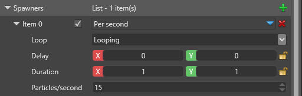
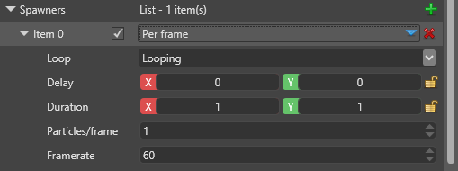
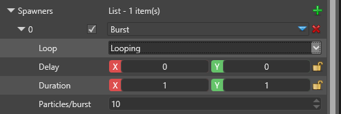
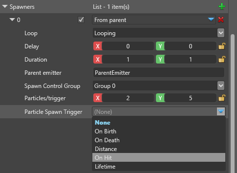

Particle spawners
Beginner Artist Programmer
Particle spawners control when, how many, and how quickly particles are emitted. Emitters need at least one spawner, but can contain multiple spawners with different settings.
Per second
Emits a fixed number of particles per second. It balances and interpolates them and is stable even if the framerate changes or drops. For example, at a rate of 20 particles per second, the spawner spawns one particle every three frames for 60fps games and two particles for every three frames (skipping every third frame) for 30fps games.

| Property | Description |
|---|---|
| Loop | To have the spawner loop when it reaches the end of its duration, select Looping (default). To have the spawner loop with no wait between each loop, select Looping, no delay. To have the spawner spawn once and then stop, select One shot. |
| Delay | How long (in seconds) the spawner waits before spawning. This is a random value between the X (minimum) and Y (maximum) values. |
| Duration | How long (in seconds) the spawner spawns particles for. At the end of the duration, the spawner either starts again or stops, depending on the Loop property. |
| Particles | The number of particles the spawned per second. This can be a floating value (eg 36.875). |
Per frame
Emits a fixed number of particles per frame, regardless of framerate. This can be useful if you require a fixed number of particles - for example, exactly one every frame, which is useful for trails and ribbons.

| Property | Description |
|---|---|
| Loop | To have the spawner loop when it reaches the end of its duration, select Looping (default). To have the spawner loop with no wait between each loop, select Looping, no delay. To have the spawner spawn once and then stop, select One shot. |
| Delay | How long (in seconds) the spawner waits before spawning. This is a random value between the X (minimum) and Y (maximum) values. |
| Duration | How long (in seconds) the spawner spawns particles for. |
| Particles | The number of particles spawned per frame. The value can be a floating value, including values less than 1, in which case a new particle is spawned every few frames. |
| Framerate | This is for estimation purposes only when the engine calculates the maximum number of particles. |
Burst
Emits all particles in one burst.

| Property | Description |
|---|---|
| Loop | To have the spawner loop when it reaches the end of its duration, select Looping (default). To have the spawner loop with no wait between each loop, select Looping, no delay. To have the spawner spawn once and then stop, select One shot. |
| Delay | How long (in seconds) the spawner waits before spawning. This is a random value between the X (minimum) and Y (maximum) values. |
| Duration | How long (in seconds) the spawner spawns particles for. |
| Particles/burst | The number of particles spawned in each burst. |
Distance
Emits particles based on the distance traveled by the emitter. If the emitter doesn't move, it spawns no particles.

| Property | Description |
|---|---|
| Loop | To have the spawner loop when it reaches the end of its duration, select Looping (default). To have the spawner loop with no wait between each loop, select Looping, no delay. To have the spawner spawn once and then stop, select One shot. |
| Delay | How long (in seconds) the spawner waits before spawning. This is a random value between the X (minimum) and Y (maximum) values. |
| Duration | How long (in seconds) the spawner spawns particles for. |
| Particles/unit | The number of particles spawned for every distance unit the spawner moves. You can use fractions if you need fewer than one particle per distance unit. The rate adjusts with scaling. |
From parent
Emits particles based on other particles (parents). When certain conditions in a parent particle are met, the spawner spawns particles.

| Property | Description |
|---|---|
| Loop | To have the spawner loop when it reaches the end of its duration, select Looping (default). To have the spawner loop with no wait between each loop, select Looping, no delay. To have the spawner spawn once and then stop, select One shot. |
| Delay | How long (in seconds) the spawner waits before spawning. This is a random value between the X (minimum) and Y (maximum) values. |
| Duration | How long (in seconds) the spawner spawns particles for. |
| Parent emitter | The parent emitter, which should match the emitter's name set on that emitter. |
| Spawn Control Group | This field will be added to the parent particles for more precise control over which parent particle spawns how many children. There are 4 groups you can choose from and they should match the initializers' groups, if initializers require control. |
| Particles/trigger | How many particles (min and max) are spawned from a parent each time the triggering condition is met. |
| Particle Spawn Trigger | What condition triggers child particles spawning (detailed below) |
Particle Spawn Trigger
- On Birth - Child particles are spawned once when a parent particle is born (once per parent)
- On Death - Child particles are spawned once when a parent particle dies (once per parent)
- Distance - Child particles are spawned per distance traveled as the parent particle moves
- On Hit - Parent particles need to implement Collision Updater. Child particles are spawned when a parent particle hits the surface.
- Lifetime - Child particles are spawned when the parent particle's lifetime is between two limits, A and B, expressed as normalized values (0 to 1) over the particle's lifetime. If A < B, the period is 0..(A..B)..1, if B > A the period is reversed to (0..B)..(A..1). This method is less precise than the On Birth/On Death conditions.